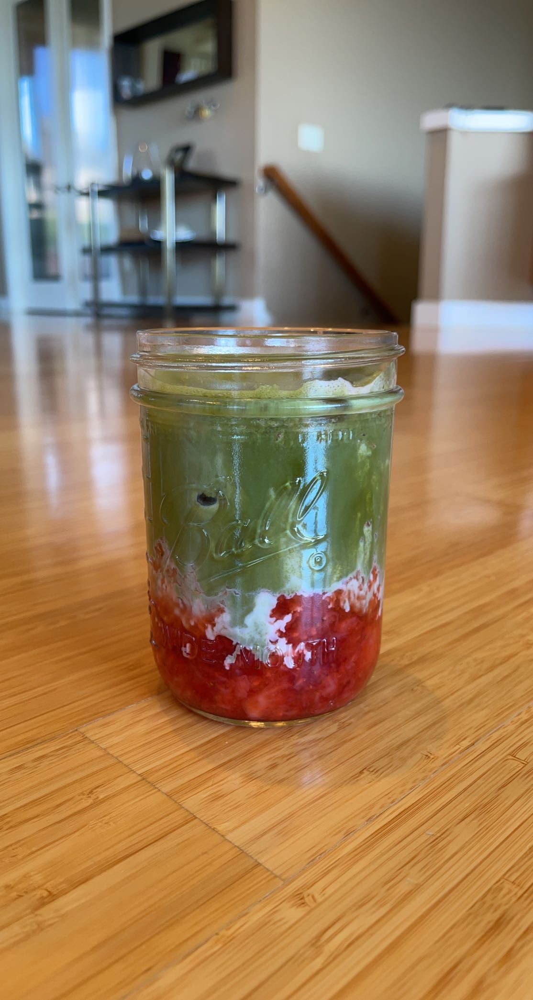
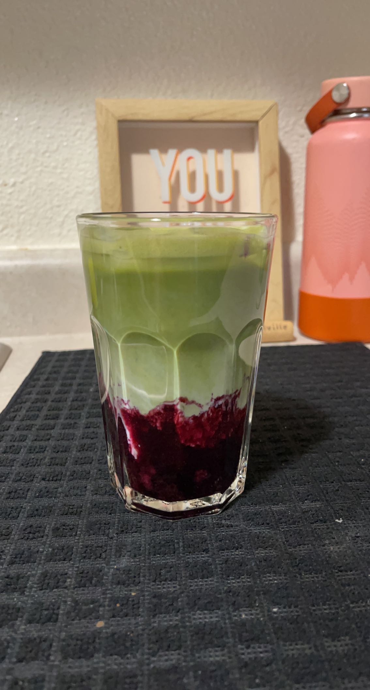

Matcha Latte
This matcha latte is perfect for any who's not a fan for coffee or for any who just wants a break from the
coffee jitters. It is such a versatile drink with so many ways to enjoy!
Ingredient List
- 1 spoon of
high grade ceremonial matcha (Can adjust amount)
*Note: The link above is the matcha brand I use and in my opinion has a great quality. You can order
online or at Costco :) The more vibrant greent the matcha, the better!*
- Optional: 1 spoon sweetener of choice (I use maple syrup or
honey and can adjust to your liking)
- Warm water (see Instructions for amount)
*Note: Hot water will burn the matcha and will give a bitter taste!*
- Milk of choice (see Instructions for amount)
- Optional: Ice
- Optional: Fresh pureed strawberries, blueberries, or mangoes for aesthetic and elevating the taste! (Best for Iced)
Instructions
Iced
Note: A latte has a 1:3 coffee to milk ratio!
- First, sift and add the matcha powder to a heat resistant mug and start
boiling your water
*Note: Sifting the matcha will eliminate clumps and will make the matcha smoother*
- Then, add your choice of sweetener along with the matcha
- When the water is hot, let the water sit to about 80 degrees and then pour into the mug enough to cover the matcha (should be a dark green color)
- Use a frother wand or use a matcha whisk
- Grab your favorite cup and get some ice
*Note: In this step, this is where you add the pureed strawberries, blueberries, or mangoes here!*
- Pour your choice of milk about 2/3 of the way
- Finally, grab the mug with your matcha and pour it over the milk
- Stir and enjoy!
Hot
- First, sift and add the matcha powder to a heat resistant mug and start
boiling your water and heat up your milk of choice
*Note: Sifting the matcha will eliminate clumps and will make the matcha smoother*
- Then, add your choice of sweetener along with the matcha
- When the water is hot, let the water sit to about 80 degrees and then pour into the mug enough to cover the matcha (should be a dark green color)
- Use a frother wand or use a matcha whisk
- Grab your favorite cup and pour your choice of milk about 2/3 of the way
- Finally, grab the mug with your matcha and pour it over the milk
- Stir and enjoy!
My version


On the left is a elevated version of a matcha latte where I used pureed strawberries on the bottom!
It is probably my favorite drink of all time.
On the right is another version of a matcha latte that I learned recently. I was very surprised on the taste and I never
though blueberries could match with matcha!